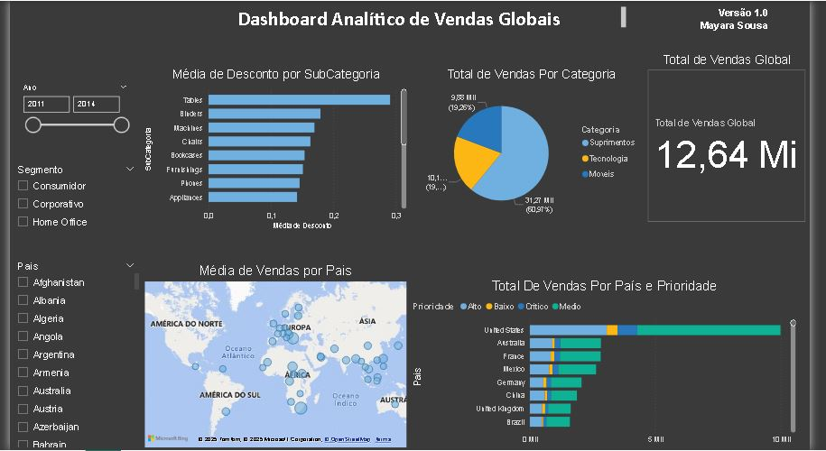

Projetos Vendas Globais
Análise interativa das vendas usando Power BI.
Pergunta 1 - Qual o valor total vendido?
Pergunta 2 - Quantas vendas foram realizadas por categoria de produto?
Pergunta 3 - Quantas vendas foram realizadas por país considerando a prioridade de entrega?
Pergunta 4 - Qual foi a média de desconto nas vendas por subcategoria de produto?
Pergunta 5 - Quais países tiveram maior média de valor de venda? Demonstre em um mapa.
O Dashboard da ao usuário a possibilidade de filtrar os dados por ano, por segmento e por país.
Dashboard Analítico de Vendas Globais
 Ver no GitHubProjeto Vendas
O projeto apresenta análises detalhadas sobre as vendas, trazendo insights estratégicos por meio de
gráficos e indicadores interativos:O projeto apresenta análises detalhadas sobre as vendas, trazendo
insights estratégicos por meio de gráficos e indicadores interativos:
1 - Exibição do total do valor de venda considerando cada modo de envio dos pedidos.
2 - Identificação dos mercados com o maior custo médio de envio dos produtos vendidos.
3 - Monitoramento da meta da empresa, que busca manter um valor médio de venda de 350 por mês,
utilizando um indicador (KPI – Key Performance Indicator).
4 - Cálculo do lucro médio por categoria de produto, considerando o lucro como a diferença entre valor
de venda e custo de envio.
5 - Análise do comportamento da margem de lucro ao longo do tempo, com a margem calculada como lucro
dividido pelo valor de venda.
Mini Projeto de Marketing
Neste projeto, criei 4 Dashboards interativos com mais de 10 elementos visuais, além de aplicar customizações, formatações e correções nos dados para aprimorar a análise. Os dados foram customizados para representar informações sobre clientes e campanhas de marketing realizadas por uma empresa. A ideia central foi estruturar os relatórios em quatro visões estratégicas, permitindo uma compreensão aprofundada dos padrões de compra e da efetividade das campanhas.


 Ver no GitHub
Ver no GitHub